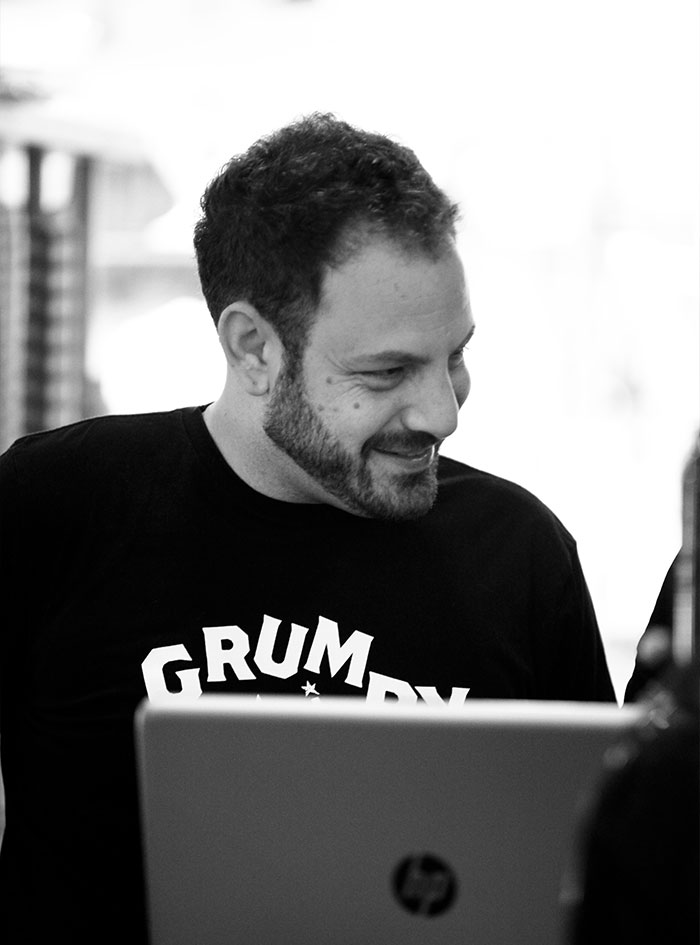
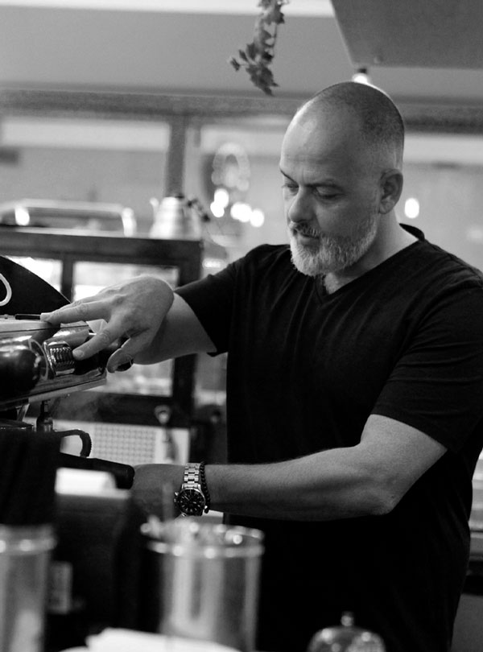
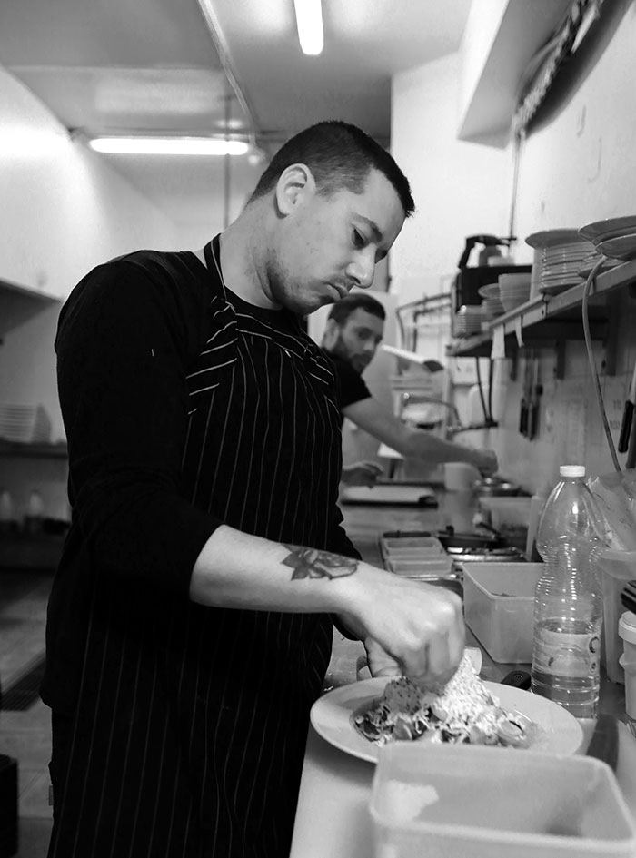

קצת עלינו
Bread & Breakfast
בואו נסכים על דבר אחד – ארוחת בוקר עשירה היא הארוחה הכי כיפית של היום, ואצלנו מאמינים שאין סיבה שלא להזמין אותה גם לצהריים או לערב.
תפריט ברד אנד ברקפסט כשר מהדרין בהשגחת הרבנות, ומציע לכם מבחר גדול של ארוחות בוקר שמשלבות לחם טרי, ביצים כבקשתכם, גבינות, ירקות ועוד מאזטים טעימים – כל אבות המזון ומגוון של טעמים בארוחה אחת. לצד אלו תמצאו כאן שקשוקות מצוינות ומאפים מעלפים.
קחו כמה מנות לדוגמא: "מאפה עלמוני" הוא בצק עלים שבתוכו מתערבבים בכיף גבינות פטה ומנצ'גו, ביצה עלומה ורוטב שמנת ותרד. "אגדת יער" היא מחבת לוהטת שבה מיקס פטריות עם ביצה עלומה וגבינת פרמזן. שקשוקת פופאי שלנו כוללת שתי ביצים טריות על בסיס תרד ברוטב רויאל וגבינת מוצרלה. אתם כבר מריירים?
הפרנץ' טוסט המושחת שלנו הוא בריוש מטוגן בחמאה ומוגש לצד גלידת וניל או סלט פירות מתוק ומרענן.
ועוד לא הזכרנו את מבחר הלחמים הטריים שלנו, שכולם עשויים מחמצת טבעית ללא שמרים וסוכר, וממש מתחננים שתמרחו עליהם חמאה רכה. הלחמים שלנו הם גם הבסיס לסנדוויצ'ים המצוינים והנדיבים שלנו, שממולאים בגבינות, ירקות, דגים וממרחים מגוונים.
התפריט שלנו כולל גם סלטים עשירים, פסטות בהרכבה ומנות עיקריות מיוחדות למי שלא מוותר על מנה עיקרית חמה לצהריים: חריימה, גירוס שווארמת דג, תבשיל אורז, ירקות וטופו ועוד.
אוהבים פיצה? אתם יכולים לבחור כאן בין מרגריטה קלאסית לפיצה אלפרדו עם ראגו פטריות.
את כל אלו תוכלו לקנח במבחר העוגות והעוגיות שלנו, וללוות לצד אייסים מתוקים על בסיס פירות או חלב או משקאות חמים.
בכל בוקר אנו מכינים לכבודכם מבחר משתנה של עוגות ומאפים טריים, ואתם מוזמנים לשאול אותנו על הספיישלים של היום. המראה של הוויטרינה שלנו בוודאי יקשה עליכם להחליט מה לבחור, אבל אנחנו כאן כדי לעזור לכם ולהמליץ על מה שיהיה לטעמכם.
נשמח לראות ולהאכיל אתכם כבר היום!
שיהיה לכם בתיאבון!
הזמינו משלוח

